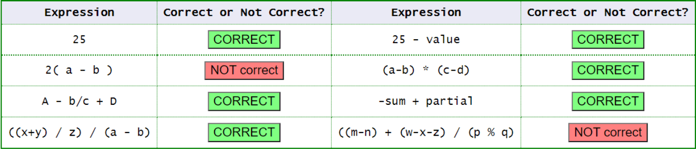

Operadores y expresiones¶
Los operadores son símbolos especiales que permiten realizar operaciones sobre uno o varios valores. Estos valores reciben el nombre de operandos.
Por ejemplo:
int resultado = 10 + 5;
En esta expresión:
10y5son los operandos.+es el operador.10 + 5es una expresión.- El resultado de la expresión es
15.
Podemos utilizar directamente valores:
int resultado = 10 + 5;
o variables:
int numero1 = 10;
int numero2 = 5;
int resultado = numero1 + numero2;
System.out.println(resultado); // 15
Conceptos importantes
- Operando: valor o variable sobre el que actúa un operador.
- Operador: símbolo que indica la operación que debe realizarse.
- Expresión: combinación de valores, variables, operadores y paréntesis que produce un resultado.
Por ejemplo:
int resultado = (10 + 5) * 2;
La expresión:
(10 + 5) * 2
produce como resultado:
30
Java evalúa primero la expresión situada a la derecha del operador de asignación = y posteriormente almacena el resultado en la variable situada a la izquierda.
int resultado = 10 + 5 * 2;
Primero se realiza:
5 * 2 = 10
y después:
10 + 10 = 20
Por tanto:
System.out.println(resultado); // 20
Las reglas para construir expresiones en Java son similares a las utilizadas en matemáticas:
- Cada operador debe tener el número adecuado de operandos.
- Los operadores
+,-,*,/y%necesitan normalmente dos operandos. - Algunos operadores trabajan con un único operando.
- Los paréntesis
()permiten agrupar expresiones y modificar el orden de evaluación.
Por ejemplo:
int resultado1 = 10 + 5 * 2; // 20
int resultado2 = (10 + 5) * 2; // 30


Operadores aritméticos¶
Los operadores aritméticos permiten realizar operaciones matemáticas.
| Símbolo | Operación | Descripción |
|---|---|---|
+ |
Suma | Suma dos valores. |
- |
Resta | Resta el segundo operando al primero. |
* |
Producto | Multiplica dos valores. |
/ |
División | Divide el primer operando entre el segundo. |
% |
Módulo | Obtiene el resto de una división. |
Suma¶
int a = 10;
int b = 5;
int resultado = a + b;
System.out.println(resultado); // 15
Resta¶
int a = 10;
int b = 5;
int resultado = a - b;
System.out.println(resultado); // 5
Multiplicación¶
int precio = 20;
int cantidad = 3;
int total = precio * cantidad;
System.out.println(total); // 60
División¶
int a = 20;
int b = 4;
int resultado = a / b;
System.out.println(resultado); // 5
División de números enteros
Si los dos operandos son enteros, Java realiza una división entera.
int resultado = 10 / 3;
System.out.println(resultado); // 3
La parte decimal se pierde.
Para obtener un resultado decimal debemos utilizar al menos un operando decimal:
double resultado = 10.0 / 3;
System.out.println(resultado); // 3.333333...
Operador módulo %¶
El operador % devuelve el resto de una división.
int resto = 10 % 3;
System.out.println(resto); // 1
Es especialmente útil para comprobar si un número es par:
int numero = 8;
System.out.println(numero % 2); // 0
Si:
numero % 2 == 0
el número es par.
Por ejemplo:
int numero = 8;
boolean esPar = numero % 2 == 0;
System.out.println(esPar); // true
Operador + con cadenas¶
El operador + también permite concatenar cadenas de caracteres.
String nombre = "Ana";
String apellido = "García";
String nombreCompleto = nombre + " " + apellido;
System.out.println(nombreCompleto);
Salida:
Ana García
También podemos combinar texto y números:
String nombre = "Ana";
int edad = 18;
System.out.println("Nombre: " + nombre);
System.out.println("Edad: " + edad);
Hay que prestar atención al orden de evaluación:
System.out.println("Resultado: " + 10 + 5);
Salida:
Resultado: 105
Si queremos realizar primero la suma:
System.out.println("Resultado: " + (10 + 5));
Salida:
Resultado: 15
Operadores relacionales¶
Los operadores relacionales permiten comparar dos valores.
El resultado de una comparación siempre es un valor de tipo boolean:
true
false
| Símbolo | Operación | Descripción |
|---|---|---|
== |
Igual a | Comprueba si dos valores son iguales. |
!= |
Distinto de | Comprueba si dos valores son diferentes. |
< |
Menor que | Comprueba si el primer valor es menor. |
<= |
Menor o igual que | Comprueba si es menor o igual. |
> |
Mayor que | Comprueba si el primer valor es mayor. |
>= |
Mayor o igual que | Comprueba si es mayor o igual. |
Ejemplo:
int a = 10;
int b = 5;
System.out.println(a == b); // false
System.out.println(a != b); // true
System.out.println(a > b); // true
System.out.println(a < b); // false
System.out.println(a >= 10); // true
System.out.println(b <= 5); // true
El resultado también puede almacenarse:
int edad = 20;
boolean mayorDeEdad = edad >= 18;
System.out.println(mayorDeEdad); // true
Los operadores relacionales son especialmente importantes para construir condiciones:
int edad = 20;
if (edad >= 18) {
System.out.println("Es mayor de edad");
}
= no es lo mismo que ==
El operador:
=
realiza una asignación:
int edad = 18;
El operador:
==
realiza una comparación:
edad == 18
Comparación de String¶
Con los tipos primitivos podemos utilizar == para comparar valores:
int a = 10;
int b = 10;
System.out.println(a == b); // true
Sin embargo, para comparar el contenido de dos objetos String debemos utilizar el método equals():
String nombre1 = "Ana";
String nombre2 = "Ana";
System.out.println(nombre1.equals(nombre2)); // true
Por tanto, para comparar cadenas utilizaremos:
nombre1.equals(nombre2)
y no:
nombre1 == nombre2
Comparación de objetos
El operador == aplicado a objetos no compara normalmente su contenido, sino sus referencias.
Este concepto se estudiará con mayor profundidad cuando trabajemos con Programación Orientada a Objetos.
Operadores lógicos¶
Los operadores lógicos permiten combinar o modificar expresiones booleanas.
| Símbolo | Operación | Descripción |
|---|---|---|
&& |
AND lógico | Devuelve true cuando ambas condiciones son verdaderas. |
|| |
OR lógico | Devuelve true cuando al menos una condición es verdadera. |
! |
NOT lógico | Invierte un valor booleano. |
AND lógico &&¶
Las dos condiciones deben cumplirse.
int edad = 20;
boolean tieneCarnet = true;
boolean puedeConducir = edad >= 18 && tieneCarnet;
System.out.println(puedeConducir); // true
Otro ejemplo:
int nota = 7;
int asistencia = 85;
if (nota >= 5 && asistencia >= 80) {
System.out.println("Módulo superado");
}
OR lógico ||¶
Es suficiente con que una de las condiciones sea verdadera.
boolean esProfesor = false;
boolean esAdministrador = true;
if (esProfesor || esAdministrador) {
System.out.println("Puede acceder");
}
NOT lógico !¶
Invierte un valor booleano.
boolean encendido = true;
System.out.println(encendido); // true
System.out.println(!encendido); // false
También podemos utilizarlo en condiciones:
boolean bloqueado = false;
if (!bloqueado) {
System.out.println("El usuario puede acceder");
}
Ejemplo completo¶
int edad = 20;
boolean tieneEntrada = true;
boolean expulsado = false;
if (edad >= 18 && tieneEntrada && !expulsado) {
System.out.println("Puede entrar");
}
Tabla de verdad de AND¶
| A | B | A && B |
|---|---|---|
false |
false |
false |
false |
true |
false |
true |
false |
false |
true |
true |
true |
Tabla de verdad de OR¶
| A | B | A \|\| B |
|---|---|---|
false |
false |
false |
false |
true |
true |
true |
false |
true |
true |
true |
true |
Tabla de verdad de NOT¶
| A | !A |
|---|---|
false |
true |
true |
false |
Operadores unarios¶
Los operadores unarios necesitan un único operando.
| Símbolo | Operación | Descripción |
|---|---|---|
+ |
Positivo | Indica un valor positivo. |
- |
Negativo | Cambia el signo de un valor. |
++ |
Incremento | Incrementa el valor en una unidad. |
-- |
Decremento | Disminuye el valor en una unidad. |
! |
NOT lógico | Invierte un valor booleano. |
Ejemplos:
int numero = 10;
int positivo = +numero;
int negativo = -numero;
System.out.println(positivo); // 10
System.out.println(negativo); // -10
Incremento ++¶
La instrucción:
numero++;
equivale, de forma simplificada, a:
numero = numero + 1;
Ejemplo:
int numero = 5;
numero++;
System.out.println(numero); // 6
Decremento --¶
int numero = 5;
numero--;
System.out.println(numero); // 4
Pre-incremento y post-incremento¶
Los operadores ++ y -- pueden colocarse antes o después de la variable.
Pre-incremento¶
Primero incrementa la variable y después utiliza su valor.
int a = 8;
int b;
b = ++a;
System.out.println(a); // 9
System.out.println(b); // 9
El proceso sería:
a = 8
a aumenta → 9
b recibe 9
Post-incremento¶
Primero utiliza el valor y después incrementa la variable.
int a = 8;
int b;
b = a++;
System.out.println(a); // 9
System.out.println(b); // 8
El proceso sería:
a = 8
b recibe 8
a aumenta → 9
Uso sencillo
Al comenzar a programar es preferible utilizar ++ y -- como instrucciones independientes:
contador++;
en lugar de introducirlos dentro de expresiones complejas.
Operadores de asignación¶
El operador de asignación = permite almacenar un valor en una variable:
int edad = 18;
También podemos modificar posteriormente su valor:
edad = 19;
El valor situado a la derecha se evalúa primero y posteriormente se almacena en la variable situada a la izquierda:
int numero = 10;
numero = numero + 5;
System.out.println(numero); // 15
Java dispone de operadores de asignación compuesta que permiten escribir determinadas operaciones de forma más compacta.
| Operador | Ejemplo | Equivalencia |
|---|---|---|
+= |
a += 5 |
a = a + 5 |
-= |
a -= 5 |
a = a - 5 |
*= |
a *= 5 |
a = a * 5 |
/= |
a /= 5 |
a = a / 5 |
%= |
a %= 5 |
a = a % 5 |
Suma y asignación¶
int puntos = 10;
puntos += 5;
System.out.println(puntos); // 15
Equivale a:
puntos = puntos + 5;
Resta y asignación¶
int vidas = 5;
vidas -= 1;
System.out.println(vidas); // 4
Multiplicación y asignación¶
int numero = 5;
numero *= 3;
System.out.println(numero); // 15
División y asignación¶
int numero = 20;
numero /= 4;
System.out.println(numero); // 5
Módulo y asignación¶
int numero = 17;
numero %= 5;
System.out.println(numero); // 2
Operadores de bits¶
Los operadores de bits permiten trabajar directamente con la representación binaria de números enteros.
| Símbolo | Operación | Descripción |
|---|---|---|
& |
AND | El resultado es 1 cuando ambos bits son 1. |
\| |
OR | El resultado es 1 cuando al menos uno de los bits es 1. |
^ |
XOR | El resultado es 1 cuando los bits son diferentes. |
~ |
NOT | Invierte los bits. |
<< |
Desplazamiento izquierda | Desplaza los bits hacia la izquierda. |
>> |
Desplazamiento derecha | Desplaza los bits hacia la derecha. |
Por ejemplo:
int a = 5; // 0101
int b = 3; // 0011
System.out.println(a & b); // 1
System.out.println(a | b); // 7
System.out.println(a ^ b); // 6
Para entenderlo:
5 = 0101
3 = 0011
AND:
0101
& 0011
------
0001 → 1
OR:
0101
| 0011
------
0111 → 7
XOR:
0101
^ 0011
------
0110 → 6
Operadores de bits
Estos operadores son menos habituales en los primeros programas. Se utilizan en situaciones específicas donde necesitamos manipular directamente los bits de un número.
Precedencia de operadores¶
Cuando una expresión contiene varios operadores, Java sigue unas reglas de precedencia para decidir qué operaciones se realizan primero.
Por ejemplo:
int resultado = 10 + 5 * 2;
System.out.println(resultado); // 20
La multiplicación tiene mayor prioridad que la suma:
10 + 5 * 2
└───┘
10
10 + 10 = 20
Si queremos realizar primero la suma utilizamos paréntesis:
int resultado = (10 + 5) * 2;
System.out.println(resultado); // 30
Para las operaciones más habituales podemos recordar este orden simplificado:
| Prioridad | Operadores |
|---|---|
| 1 | () |
| 2 | ++, --, !, + y - unarios |
| 3 | *, /, % |
| 4 | +, - |
| 5 | <, <=, >, >= |
| 6 | ==, != |
| 7 | && |
| 8 | \|\| |
| 9 | =, +=, -=, *=, /=, %= |
Utiliza paréntesis
Aunque conozcamos la precedencia de operadores, es recomendable utilizar paréntesis cuando ayuden a entender mejor una expresión.
En lugar de:
boolean resultado = edad >= 18 && nota >= 5 || autorizado;
podemos escribir:
boolean resultado = (edad >= 18 && nota >= 5) || autorizado;
El código resulta más fácil de leer.
Ejemplo completo¶
El siguiente programa combina varios de los operadores estudiados:
public class Main {
public static void main(String[] args) {
double precio = 50.0;
int cantidad = 3;
double descuento = 10.0;
// Operadores aritméticos
double subtotal = precio * cantidad;
double importeDescuento = subtotal * descuento / 100;
double total = subtotal - importeDescuento;
// Operadores relacionales
boolean compraGrande = total >= 100;
// Operadores lógicos
boolean envioGratis = total >= 100 && cantidad >= 2;
// Mostrar resultados
System.out.println("Precio: " + precio + " €");
System.out.println("Cantidad: " + cantidad);
System.out.println("Subtotal: " + subtotal + " €");
System.out.println("Descuento: " + importeDescuento + " €");
System.out.println("Total: " + total + " €");
System.out.println("¿Compra grande? " + compraGrande);
System.out.println("¿Envío gratuito? " + envioGratis);
}
}
La ejecución produciría:
Precio: 50.0 €
Cantidad: 3
Subtotal: 150.0 €
Descuento: 15.0 €
Total: 135.0 €
¿Compra grande? true
¿Envío gratuito? true
Este ejemplo permite observar cómo una expresión puede estar formada por diferentes variables y operadores:
double importeDescuento = subtotal * descuento / 100;
y cómo el resultado de una expresión relacional puede almacenarse directamente en una variable boolean:
boolean compraGrande = total >= 100;
También podemos construir expresiones más complejas combinando operadores relacionales y lógicos:
boolean envioGratis = total >= 100 && cantidad >= 2;
Esta expresión será true únicamente cuando se cumplan las dos condiciones.
Actividades¶
-
AC 205 (RA1 / CE1b CE1c CE1d CE1h / IC1 / 3p) Escribe un programa que calcule y muestre por pantalla:
- a. El área de un cuadrado de lado 5cm.
- b. El perímetro de un rectángulo cuyas medidas son 8x4.
- c. El área de un triángulo, b = 18cm, h = 15cm.
- d. El área y perímetro de un círculo, radio = 7.5 cm.
-
AR 206 (RA1 / CE1h / IC1 / 3p) Calcula las siguientes expresiones y añade el tipo de dato que devuelve la expresión.
- 12 / 3
- 12 / 8
- 11.0 / 6.0
- 2.0 / 4.0
- 1.0 / 2.0
- 12 / 6
- 11 / 2